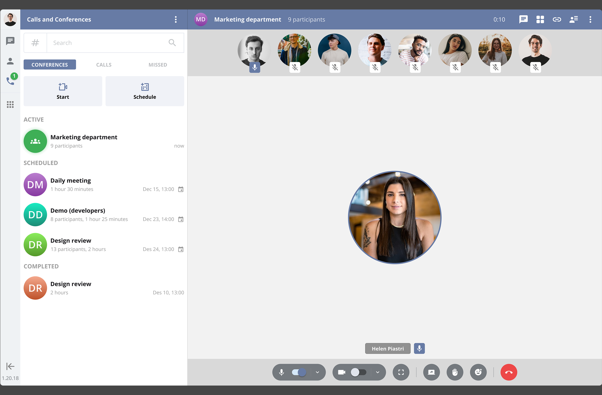
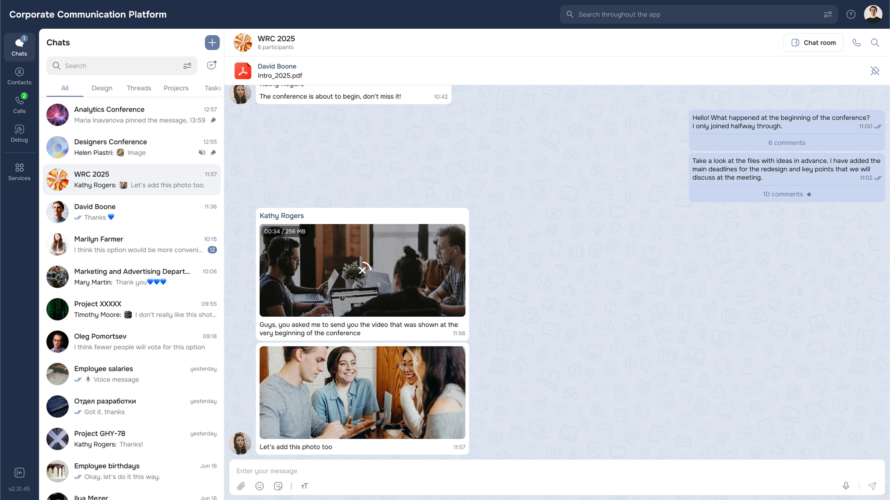

Competitive benchmarking
— Compared onboarding and first-purchase flows
— Analysed risk framing patterns
— Identified guidance mechanisms in leading apps
A research-driven UX audit of the Raiffeisen Invest mobile app — focused on beginner trust, early clarity, and habit formation.

Beginner investors often disengage after a negative first experience. The audit focused on identifying where the current UX weakens trust, increases cognitive load, and fails to support informed decisions.
The outcome was a structured opportunity map across onboarding, purchase flow, contextual education, and long-term engagement mechanics.
I combined competitive benchmarking, public feedback analysis, and qualitative validation to identify trust-breaking moments in the early investment journey.
— Compared onboarding and first-purchase flows
— Analysed risk framing patterns
— Identified guidance mechanisms in leading apps
— Reviewed App Store & Play Market feedback
— Clustered friction themes
— Prioritised trust-impacting issues
— Short interviews with beginner investors
— Analysed mental models & expectations
— Validated key pain points
— Mapped friction to journey stages
— Identified behavioural drop-off risks
— Converted insights into opportunity areas
1. No structured onboarding → beginners enter the app without a clear investment strategy or risk framing.
2. Purchase flow lacks contextual explanations → users make decisions without understanding volatility, diversification, or long-term impact.
3. No habit-building mechanics → the product supports transactions, but not repeat behaviour or long-term discipline.
4. Portfolio visibility does not translate into actionable guidance → users see numbers, but don’t know what to do next.
A short onboarding flow defining risk tolerance and goals, transforming the first session into a guided starting strategy.


Prototype validation showed stronger clarity, reduced anxiety in first-time actions, and higher intent to use recurring investment features.